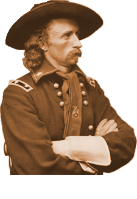

Historiography: Constructing the History of a "Battle"
The language associated with Washita is deeply entrenched in the historical record. In recent years, the designation of Washita as a "battle" or "battlefield" has come under controversy. As people think about the historical account, with the benefit of time, it is evident that the collective understanding of Washita did not include all perspectives. Native Americans never considered Washita a battlefield and now others are realizing that the historical record was flawed because it did not contain every side of the story.

George Armstrong Custer
is one of the most famous 19th-Century historical figures due to his contributions in the Civil War followed by his reputation as an Indian fighter and finally because of his route at Little Big Horn just days before the country's Centennial celebration. Custer enjoyed almost one hundred years of patriotic glorification in popular historical accounts and public memorials before his reputation was reconsidered by most historians. He is significant in the historiography of Washita because he led the attack on the Cheyenne village and then wrote the first history when he sent a dispatch to General Sherman describing the attack. He and Sheridan then collaborated to send a report to General Sherman and the federal government. He also wrote a favorable account of his conduct at Washita in his memoir My Life on the Plains.George Bent
was the son of famous Western trader William Bent and a Cheyenne named Owl Woman. He was present at Sand Creek and was a source that informed much of the Cheyenne history that was written at the turn of the 20th Century.George Bird Grinnell
was an ethnographer, naturalist, and historian. He worked among many tribes of the West but spent much of his life with the Cheyenne and he helped write their tribal history in the early 20th century. Grinnell's work informs most histories written about the Cheyennes and about the conflicts they encountered on the 19th Century plains. His work was critical in documenting Cheyenne history before their traditional way of life was overtaken by westward migration and modernity. Grinnell was an extraordinary scholar and gave new insights into the struggles of the 19th Century Cheyenne which would change the way most historians understood the so-called "Indian Wars." Grinnell is not guilty of perpetuating one-sided interpretation of Washita, rather much of his work allowed for a new conversation to take place. However, when Grinnell wrote about Washita in his influential The Fighting Cheyennes, the chapter was named: "The Battle of Washita." This is significant because historians who were careful to consider Native American perspectives respected Grinnell's work but they also cited it and used terminology that was entrenched over time.